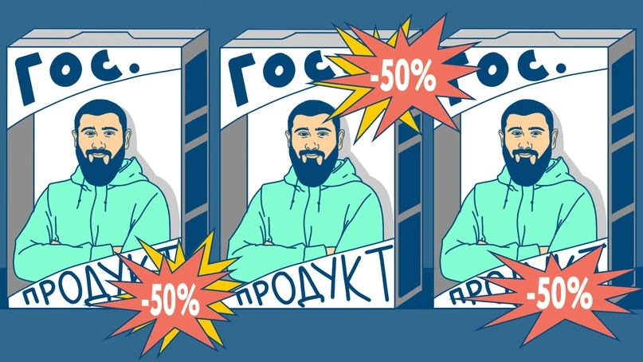
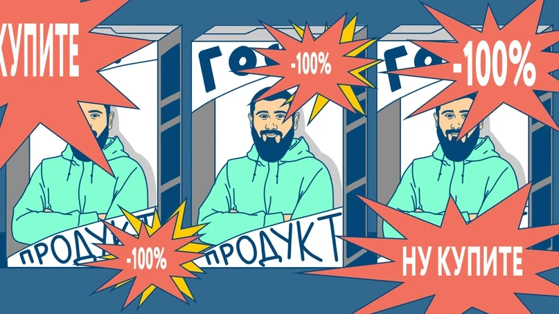

Данила Блюз — о том, почему “Льву против” не избежать скорой кончины, стоит только чувакам пойти на сотрудничество с властями
Опять не сидится спокойно общественникам, опять они лезут в наш интернет, чтобы испортить все веселье. Его и так в Сети осталось с гулькин хуй, да еще и эти все прутся сюда со своими новыми инициативами. На любую даже самую безобидную херню обязательно найдется оскорбленный гражданин с кучей свободного времени, строчащий кляузы во все инстанции.

На этот раз положением дел в интернете обеспокоились зампред комиссии Общественной палаты по общественному контролю Артем Кирьянов и глава международного центра "Поколение права" Андрей Андреев. Они накатали пространное письмо обо всем бардаке, творящемся в Сети. Да не абы кому, а самому руководителю МВД России Владимиру Колокольцеву! Пожаловались на всех, даже на таких фриков, как Эдвард Бил и — о боги! — RED21. Бедный Володя Ржавый. Чем общественникам не угодили его уроки по созданию скворечника, ума не приложу. Наябедничали Кирьянов с Андреевым от души. Уж не знаю, к каким последствиям в интернете это приведет, может Эдварда Била упекут в дурдом, а Ржавого отправят на каменоломни... но есть в этом всем и положительный момент.
Среди прочих наши ябеды настучали на осточертевших всем “СтопХамов” и на распоясавшихся в последнее время “Львов против”. Если вдруг вы только вышли из многолетней комы или же читаете этот текст спустя 100 лет с момента его написания, то вкратце расскажу вам, о ком идет речь.
“СтопХам” — молодежная организация, которая борется с неправильно припаркованными и не туда проезжающими автомобилями. Нарушителям чуваки лепят на капот или лобовое стекло большущую наклейку с надписью “Плевать на всех, паркуюсь где хочу”. “Стопхамовцы” обычно показушно мирные, но если на них начинают нападать разгневанные автолюбители, то из толпы щуплых активистов выскакивают двое-трое здоровяков и решают вопрос с негодяем уже с позиции силы. Говорят, раньше бабки на проект давал Кремль, но сейчас все поутихло, однообразный контент всем уже поднадоел, так что откуда у активистов берутся деньги на наклейки и свободное время на бабьи склоки с водилами — неизвестно.
“Лев против” — активисты под предводительством наглого бородача по имени Михаил Лазутин (согласитесь, “Миша против” звучало бы не очень круто, поэтому приплели астрологическую принадлежность главного идеолога движения). Ребята занимаются тем, что просят всех потушить сигареты и прекратить распивать спиртное в неположенных местах. В случае отказа они брызгают на сигарету водой или отбирают бутылку и выливают ее содержимое (что, как вы понимаете, является самым настоящим самоуправством). Пьяные граждане куда веселее трезвых автомобилистов, и часто конфликты перерастают в драку, чего Льву-Михаилу и надо. А недавно “Лев против” совместно с бойцами ОМОНа устроили набег на общественное пространство под названием “Яма”, где полюбили бухать молодые и не очень москвичи. Активисты указывали пальцем на непонравившихся им выпивох, тех вязали и паковали в автозак. Некоторым завсегдатаям “Ямы” доставалось дубинкой по хребту или перцовкой в глаза. Народ начал думать о том, какая же высокопоставленная, должно, быть у “Львов” крыша, раз обеспечила такой охраной.

Так вот, авторы кляузы, конечно, в письме отругали “Львов” и “СтопХамов”, но в то же время заметили, что молодежь вроде бы как руководствуется благими мотивами. Мол, мальчики хотят порядок на улице навести и нельзя такой порыв гасить, надо возглавить это дело, взять под свой контроль, чтобы активисты действовали в рамках закона, а не устраивали суд Линча на детских площадках.
"В настоящий момент предлагается привлечь вышеупомянутые движения (и иные аналогичные) к открытому диалогу с целью законной реформации в народные дружины и получения членами объединения правового статуса народных дружинников (либо других форм предусмотренной законом аккредитации при МВД России)", — пишут наши общественники.
Стоит ли говорить, что я терпеть не могу всяких активистов? Никчемыши с мессианским синдромом.
Хочешь наводить порядок на улице? Ну иди в менты или добровольцем в дружинники те же самые. Нет, I am the Law здесь! И под благородным предлогами творится дичайший беспредел.
Но ладно бы они все это делали втихую, без камер, без лайков, репостов и комментариев. Тут ведь не о порядке речь, а о банальном тщеславии. И вот на этом-то тщеславии “Льва” поймали наивные общественники (не думаю, что они хитры, — ребята ведь и правда думают, что сделка с властью всем принесет пользу).

Позиция видосов у бородача какая: полиция и государство бездействуют, а мы, бравые неравнодушные ребята, берем власть в свои руки, выходим на улицы и наводим порядок. Звучит круто, согласитесь. Как зачин для годного боевичка с Чарльзом Бронсоном или Брюсом Уиллисом. Натуральный “Таксист” Скорсезе. Кругом преступность, наркомания, разврат, и только он один, облаченный в военную куртку, с мохавком на голове и револьвером в кармане, способен очистить этот город. Романтика!
Но государство имеет свойство портить малину, превращать все в скучное, беспонтовое говно. Представьте, что к “Льву” приставят какого-нибудь унылого участкового и парочку пэпээсников? “Здравствуйте, я лейтенант Петров, не могли бы вы потушить сигарету — здесь запрещено курить. Спасибо, до свидания”.
Не будет мата, не будет драк, начнется постыдная, скучная рутина, весь романтический, бунтарский флер мигом облезет с этих борцунов. Одно дело, когда ты непризнанный, гонимый герой, другое дело — когда ты какой-то дружинник, недомент-доброволец, козыряешь каждой сволочи и на любое действие пишешь десяток рапортов.
Так что, как только наш “Лев” пойдет на сотрудничество с копами, его карьере скандального ютубера придет конец. Из “Льва” он превратится в послушного, подментованного Бонифация, и никто в итоге такое говно смотреть не будет даже под страхом пытки. Этот “Лев” питается всеобщим вниманием, без которого он отощает, а его борода вылезет, и ее развеет злой ветер времени, навсегда стирая из памяти людей воспоминания о том, что был когда-то такой “Лев” и он был против.